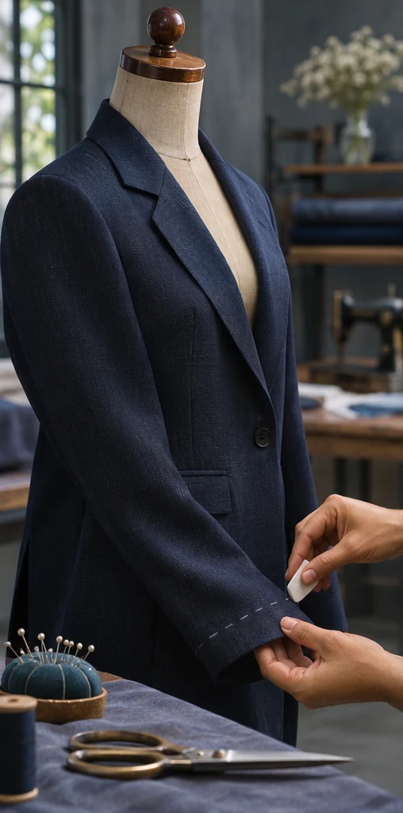

Onde a roupa
pede ajuste?
Escolha uma peça e marque no desenho os pontos que quer conversar com o ateliê.

Traga a peça para a prova.
O ateliê avalia o caimento com a roupa em uso e confirma quais ajustes fazem sentido.